Visualisation de données avec R
DU Dataviz
Dans ce document est présenté un certain nombre de commandes concernant des packages R utiles pour la visualisation de données. Voici comment les charger :
library(RColorBrewer)
library(ggplot2)
library(scales)
library(reshape2)
library(leaflet)
library(ggmap)
library(geojsonio)Le but de la visualisation de données étant de représenter graphiquement des données brutes (ou quasi-brutes), il est souvent nécessaire de prendre en compte plusieurs variables. Nous devons donc aller plus loin que les graphiques de base (nuage de points, ligne, boîte à moustache, diagramme en barres ou circulaires, …), pour les combiner par exemple.
Avec r-base (package graphics)
Ce package permet de créer plusieurs graphiques simplement. Il est nécessaire de les modifier ensuite pour avoir un résultat esthétique.
Multiples graphiques
Si on veut avoir, par exemple, toutes les informations utiles pour une variable quantitative, il est nécessaire d’avoir a minima un histogramme et une boîte à moustache, mais on peut aussi vouloir un \(qq\)-plot. Ceci permet d’introduire les commandes par(mfrow=) (ou mfcol) et layout().
mfrow et mfcol
Le paramètre mfrow de la fonction par() permet de définir un découpage (mf pour multi-frame et row car on va remplir ligne par ligne). Le paramètre mfcol fait de même en remplissant colonne par colonne.
Ces paramètres mfrow et mfcol prend donc deux valeurs :
- le nombre de lignes
- le nombre de colonnes
mfrow
Voici par exemple un découpage en 2 lignes et 3 colonnes, et l’ordre de remplissage des graphiques.
par(mfrow = c(2, 3))
for (i in 1:6) {
plot.new()
rect(0, 0, 1, 1)
text(.5, .5, i, cex = 2)
}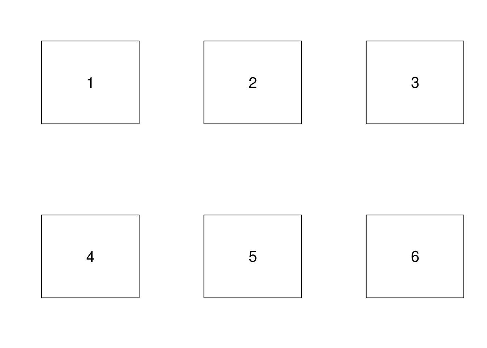
mfcol
Le même découpage, mais avec le paramètre mfcol, ce qui modifie l’ordre de remplissage des zones graphiques.
par(mfcol = c(2, 3))
for (i in 1:6) {
plot.new()
rect(0, 0, 1, 1)
text(.5, .5, i, cex = 2)
}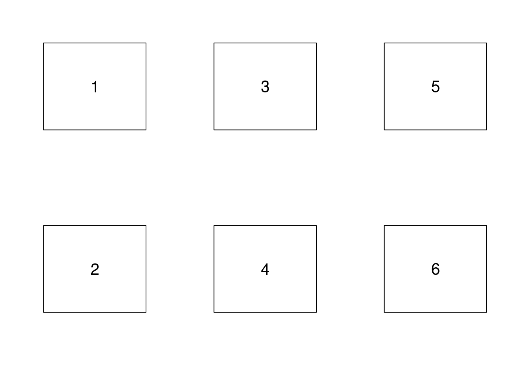
layout()
Les découpages précédents ne permettent qu’un découpage en grille. Si on veut avoir un découpage plus fin (une grande zone en haut et deux petites en bas, par exemple), il existe la commande layout(). Celle-ci prend en paramètre une matrice indiquant les numéros des graphiques, et leur placement.
En reprenant l’exemple (une grande zone en haut et deux petites en bas), il nous faut définir cette matrice :
mat = matrix(c(1, 2, 1, 3), 2, 2)
print(mat)## [,1] [,2]
## [1,] 1 1
## [2,] 2 3Pour l’utiliser, il suffit de faire comme ceci :
layout(mat)
for (i in 1:3) {
plot.new()
rect(0, 0, 1, 1)
text(.5, .5, i, cex = 2)
}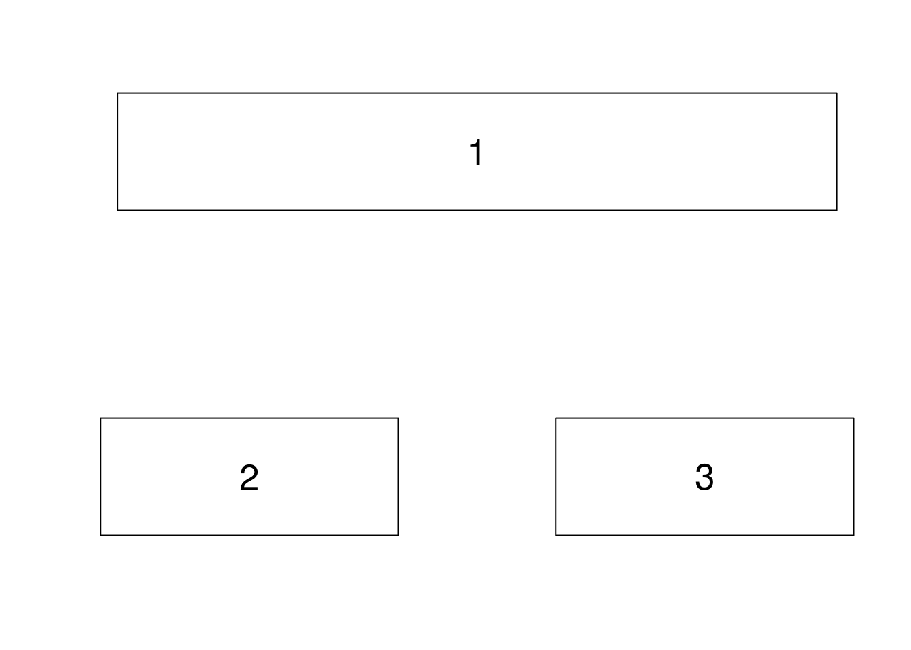
Exemple d’utilisation de layout
Nous allons utiliser layout pour représenter une variable quantitative (co2 ici, déjà présente dans R), avec les quatre représentations suivantes :
- Histogramme (avec la fonction
hist()) - Evolution sur le temps (avec
plot()-co2étant une série temporelle,tssous R) - Boîte à moustache (avec
boxplot()) - \(qq\)-plot (avec
qqline()etqqnorm())
mat = matrix(c(4, 3, 3, 1, 2, 2, 1, 2, 2), 3, 3)
print(mat)## [,1] [,2] [,3]
## [1,] 4 1 1
## [2,] 3 2 2
## [3,] 3 2 2layout(mat)
par(mar = c(2, 2, 2, 0)+.1)
hist(co2, main = "co2")
plot(co2)
boxplot(co2, axes = FALSE)
qqnorm(co2, main = "");qqline(co2)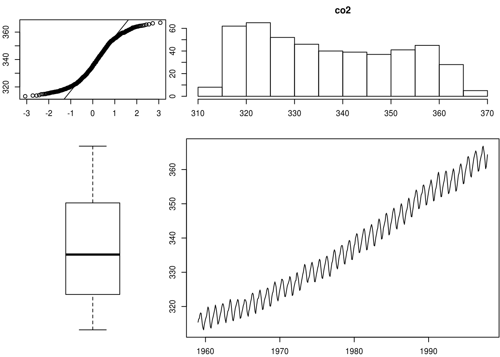
Amélioration de graphique
Voici ici un exemple de graphique personnalisé, représentant 4 variables (trois quantitatives et une qualitative), ainsi qu’une explication succinte des différentes fonctions utilisées, et quelques paramètres de celles-ci.
par(family = "serif", mar = c(5, 4, 2, 0)+.1)
couleurs_am = brewer.pal(3, "Dark2")
plot(mpg ~ hp, data = mtcars,
pch = 19,
cex = wt/3,
col = couleurs_am[mtcars$am+1],
main = "Consommation et autres",
sub = "Source : 1974 Motor Trend US magazine", font.sub = 3, cex.sub = .8,
xlab = "Puissance (en ch)",
ylab = "Consommation en Miles/Galon",
bty = "n", axes = FALSE)
axis(1, lwd = 0, lwd.ticks = .5)
at.y = axis(2, lwd = 0, lwd.ticks = .5, labels = FALSE)
text(y = at.y, x = 35, labels = at.y, srt = 0, pos = 2, xpd = TRUE)
l1 = legend("topright", legend = c("Automatique", "Manuelle"),
col = couleurs_am, bty = "n", cex = .8, pch = 19,
text.width = 50, text.col = couleurs_am,
title = "Boîte de vitesse", title.col = "black")
legend(l1$rect$left, l1$rect$top-l1$rect$h-1,
legend = range(mtcars$wt), title = "Poids (1000 lbs)",
pch = 19, pt.cex = range(mtcars$wt)/3, bty = "n", cex = .8, col = gray(.5),
text.width = 50, adj = -.25)
outliers_hp = subset(mtcars, subset = hp > 250)
text(outliers_hp$hp, outliers_hp$mpg, row.names(outliers_hp), pos = c(3, 2), cex = .8, font = 4)
outliers_mpg = subset(mtcars, subset = mpg > 30)
text(outliers_mpg$hp, outliers_mpg$mpg, row.names(outliers_mpg), pos = 4, cex = .8, font = 4)
- La fonction
par()permet de modifier les paramètres graphiques, tel que :marpour les margesfamilypour la famille de police d’écriture- certains paramètres ci-après sont définissables globalement dans la fonction
par(), ou localement dans les fonctions suivantes
- Les paramètres de la fonction
plot()pch: symbole utilisé pour chaque point (ici19indique un rond plein)cex: taille du point (ici en fonction de la variablewt)col: couleur des points (ici en fonction de la variableam)main,sub,xlab,ylab: resp. titre, sous-titre, intitulé en abcisse et intitulé en ordonnée*.sub: indication spécifique pour le sous-titrebty: type de la boîte (icinveut dire rien autour du graphique)axes: présence ou non des axes (non ici)
- La fonction
axis()qui permet d’ajouter un axe (1: en abcisse, et2: en ordonnée)- si rien d’indiqué pour
at, utilisation destickspar défaut lwd: largeur de la ligne (ici non-présente)lwd.ticks: largeur des ticks (asse fine ici)- renvoie les valeurs des ticks
- si rien d’indiqué pour
- La fonction
text()permet d’écrire du texte sur le graphique- le
x = 35est choisi par expérience srt: angle du textepos: ajustement du texte par rapport aux coordonnées indiquéesxpd: permet d’écrire en dehors du graphique (dans les marges donc)
- le
- La fonction
legend()permet d’ajouter une légende- position : soit \((x,y)\), soit chaîne spécifique
legend: texte des itemscol,bty,cex,pch: identique à précédemmenttext.widthettext.col: largeur du texte des items et couleur(s)titleettitle.col: titre de la légende (et couleur du titre)- renvoie une liste avec deux objets (
rectqui contient des infos sur le rectangle occupé par la légende dans le graphique ettextqui contient les coordonnées du texte des items) pt.cex: taille des symbolesadj: ajustement du texte
Avec la librairie ggplot2
Ce package reproduit la grammaire des graphiques (cf Grammar of Graphics, Leland Wilkinson), avec le même formalisme. Vous pouvez trouver plus d’informations sur le site officiel et la documentation. Finalement, cet article permet de bien comprendre la philosophie du package et de la grammaire.
Le principe de cette grammaire est qu’un graphique est composé de couches :
- les données à représenter, à partir desquelles nous définissons des attributs estéthiques (soit identique pour tous, soit fonction d’une des variables) :
- les axes \(x\) et \(y\),
- la couleur
- la taille
- le symbole
- les attributs géométriques (point, ligne, …)
- les transformations statistiques (déombrement, ajustement, …)
- les échelles
- le système de coordonnées (linéaire, logarithmique, polaire, …)
- le découpage (ou non) en facettes
Dans cette librairie, il y a deux fonctions principales :
qplot(ouquickplot) permettant de faire des graphiques rapidementggplotpermettant d’initialiser un graphique auquel on va ajouter des couches successivement
Le principe de cette grammaire est qu’un graphique est composé de couches :
- les données à représenter, à partir desquelles nous définissons des attributs estéthiques (soit identique pour tous, soit fonction d’une des variables) :
- les axes \(x\) et \(y\),
- la couleur
- la taille
- le symbole
- les attributs géométriques (point, ligne, …)
- les transformations statistiques (déombrement, ajustement, …)
- les échelles
- le système de coordonnées (linéaire, logarithmique, polaire, …)
- le découpage (ou non) en facettes
Dans cette librairie, il y a deux fonctions principales :
qplot(ouquickplot) permettant de faire des graphiques rapidementggplotpermettant d’initialiser un graphique auquel on va ajouter des couches successivement
Dans ce TP, nous n’aborderons que la deuxième fonction, plus complète.
Fonction ggplot()
La fonction ggplot() permet de faire plus de choses que qplot() mais nécessite un formalisme plus lourd, dont voici quelques détails :
ggplot()créé un graphique (et le renvoie, i.e. on peut stocker un graphique dans une variable pour l’afficher plus tard, éventuellement en lui ajoutant des couches)aes()permet de définir les aspects esthétiques (xetyprincipalement, mais aussicolor,fill,size, …)geom_xxx()indique la représentation à choisir (xxxétant remplacé parhistogram,boxplot, …)stat_xxx()indique les transformations statistiques à utiliser, si besoinscale_xxx()s’emploie pour des changements d’échellecoord_xxx()s’utilise pour des modifications de systèmes de coordonnéesfacet_grid()découpe les données (et donc le graphique) en plusieurs facettes selon les variables fournie dans la formuletheme_xxx(),labs(),xlab(),ylab(),ggtitle(), … pour des améliorations du graphique (annotation, couleurs, …)
Hormis la fonction aes(), qui s’utilise à l’intérieur des autres, toutes ces fonctions peuvent s’additionner pour compléter le graphique. Voici un exemple de suite de commandes pour produire un graphique :
# Récupération des moyennes et des écarts-type de Sepal.Length pour chaque espèce
iris.mean = data.frame(
Species = levels(iris$Species),
mean = tapply(iris$Sepal.Length, iris$Species, mean),
sd = tapply(iris$Sepal.Length, iris$Species, sd)
)
ggplot(data = iris, aes(y = Sepal.Length, x = Species)) + geom_boxplot() +
geom_jitter() +
geom_errorbar(data = iris.mean,
aes(y = mean, ymin = mean - sd, ymax = mean + sd),
col = "red", width = .4)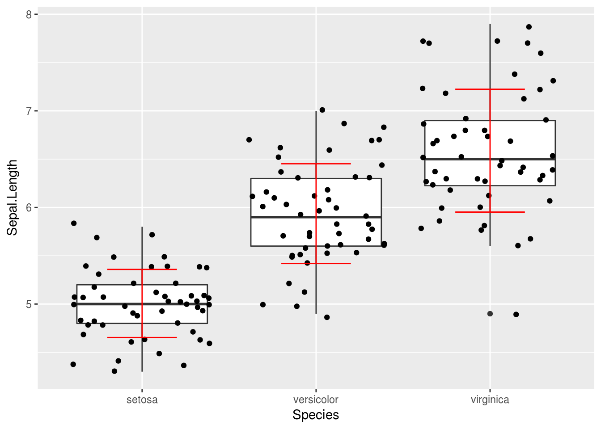
Dans le code précédent, vous pouvez remarquer que \(x\) n’est défini qu’une seule fois, dans le ggplot(). Cette spécification est conservée pour les fonctions ajoutées, et donc pour geom_errorbar().
Pour détailler ce comportement, voici trois commandes permettant de faire strictement le même graphique (le premier produit dans le paragraphe ci-dessous).
ggplot(mtcars, aes(x = mpg)) + geom_histogram()
ggplot(mtcars) + geom_histogram(aes(x = mpg))
ggplot() + geom_histogram(data = mtcars, aes(x = mpg))Voici ce qui diffère entre ces trois versions :
- Dans la première, les données seront
mtcarspour l’ensemble des commandes ajoutées, et \(x\) sera la variablempg(sauf spécification ultérieure) - Dans la seconde, on utilisera toujours
mtcarscomme données, mais \(x\) n’est défini que pour l’histogramme. On devra définir \(x\) pour les fonctions ultérieures si besoin - Dans la dernière, il n’y aucune spécification de base, et chaque fonction devra déterminée quelles données prendre, ainsi que les aspects esthétiques à utiliser dans celles-ci.
Variable quantitative
Il est possible de déclarer le nombre d’intervalles d’un histogramme, ou de les définir directement. Attention, dans ce dernier cas, le premier graphique produit est faux car il est nécessaire d’utiliser la densité (variable spéciale ..density.. dans ggplot2) et non le dénombrement. Et puisqu’on a préciser des valeurs en \(y\), nous devons préciser que nous souhaitons un histogramme en représentation géométrique.
ggplot(mtcars, aes(x = mpg)) + geom_histogram()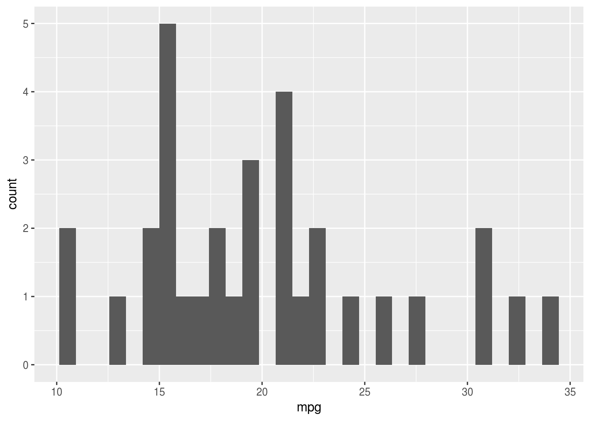
ggplot(mtcars, aes(x = mpg)) + geom_histogram(binwidth = 2)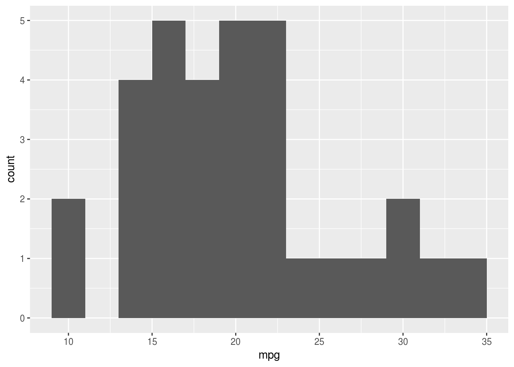
ggplot(mtcars, aes(x = mpg)) + geom_histogram(bins = 10)
ggplot(mtcars, aes(x = mpg)) + geom_histogram(breaks = c(10,12.5,15,18,25,35))
ggplot(mtcars, aes(x = mpg)) +
geom_histogram(aes(y = ..density..), breaks = c(10,12.5,15,18,25,35))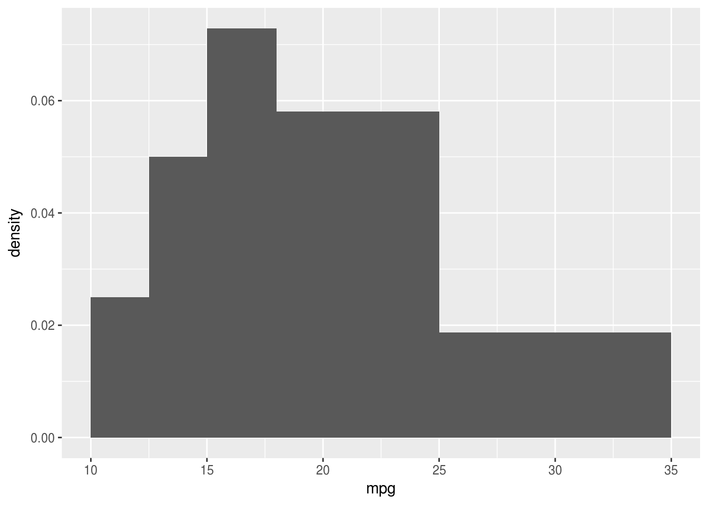
ggplot(mtcars, aes(x = mpg)) +
geom_histogram(aes(y = ..density..), binwidth = 2) +
geom_density()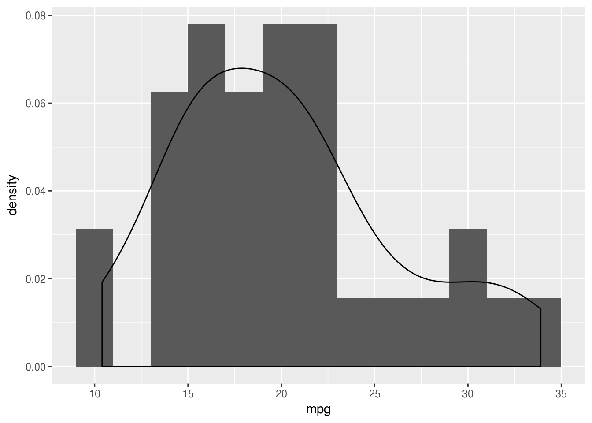
Pour la boîte à moustaches et le \(qq\)-plot, il faut utiliser les fonctions geom_boxplot() et geom_qq(), en spécifiant correctement les aspects esthétiques. Pour avoir une boîte à moustache sur une variable, nous sommes obligé de déclarer en \(x\) une valeur fixe (ici une chaîne vide "")
ggplot(mtcars, aes(y = mpg, x = "")) + geom_boxplot()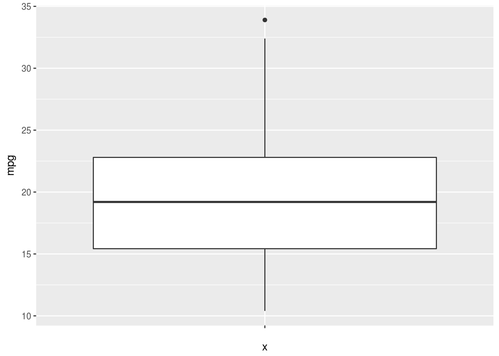
ggplot(mtcars, aes(sample = mpg)) + geom_qq()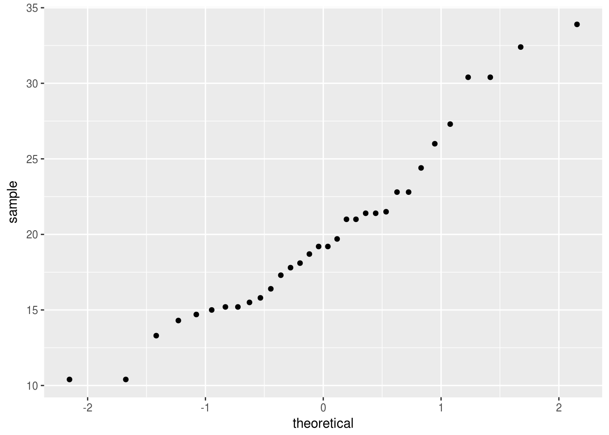
Variable qualitative
Pour un diagramme en barre, on peut se contenter d’utiliser la fonction geom_bar(). Le passage en factor() de la variable qualitative permet d’avoir un axe en abcisse propre (car am est codée numériquement dans mtcars). L’utilisation du calcul (..count..)/sum(..count..) permet de faire le calcul des pourcentages (avec le changement d’échelle sur \(y\)).
ggplot(mtcars, aes(x = am)) + geom_bar()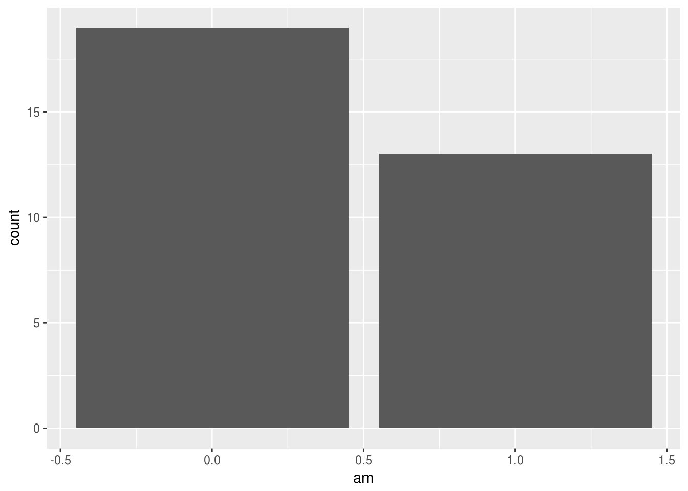
ggplot(mtcars, aes(x = factor(am))) + geom_bar()
ggplot(mtcars, aes(x = factor(am))) +
geom_bar(aes(y = (..count..)/sum(..count..))) +
scale_y_continuous(labels = percent) +
ylab("")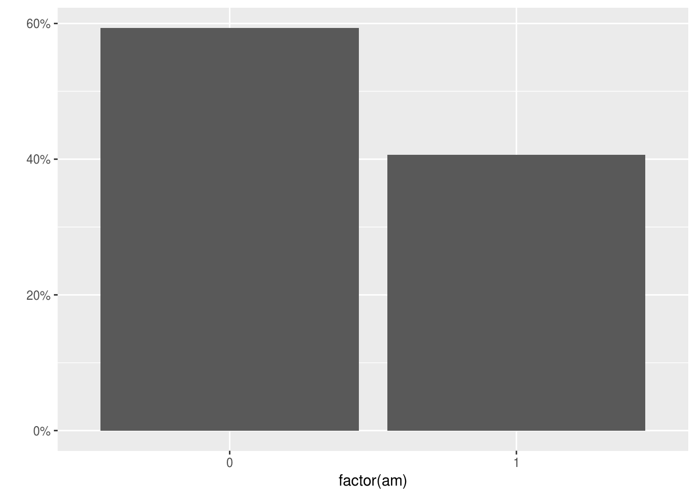
On peut aussi représenter ce diagramme en version empilé, en faisant quelques modifications sur les aspects esthétiques (fill pour la variable et spécification identique à la précédente pour \(y\)), sur l’échelle (idem) et sur les labels. La dernière partie sert à supprimer le trait sur l’axe \(x\).
ggplot(mtcars, aes("", fill = factor(am))) +
geom_bar(aes(y = (..count..)/sum(..count..))) +
scale_y_continuous(labels = percent) +
ylab("") + xlab("") + labs(fill = "am") +
theme(axis.ticks = element_blank())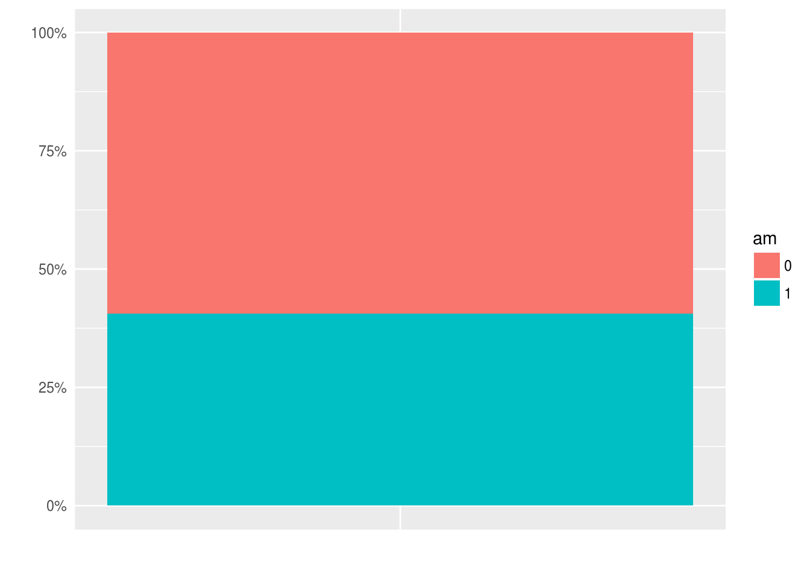
A partir de la base du graphique précédent, en ajoutant un changement de système de coordonnées (avec coord_polar()), on obtient un diagramme circulaire.
ggplot(mtcars, aes("", fill = factor(am))) +
geom_bar(aes(y = (..count..)/sum(..count..)), width = 1) +
scale_y_continuous(labels = percent) +
ylab("") + xlab("") + labs(fill = "am") +
theme(axis.ticks = element_blank()) +
coord_polar(theta = "y") 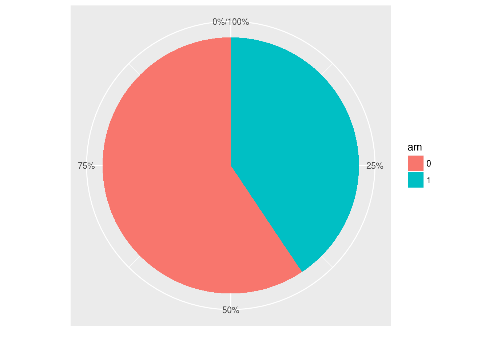
Var quantitative - Var quantitative
La représentation d’un nuage de points nécessite la définition des \(x\) et \(y\), ainsi que de geom_point(). On peut lui ajouter d’autres représentations, tel que geom_rug() et geom_smooth(), où nous pouvons définir la méthode lm pour l’ajustement linéaire.
ggplot(mtcars, aes(hp, mpg)) + geom_point() +
geom_rug() +
geom_smooth(method = "lm")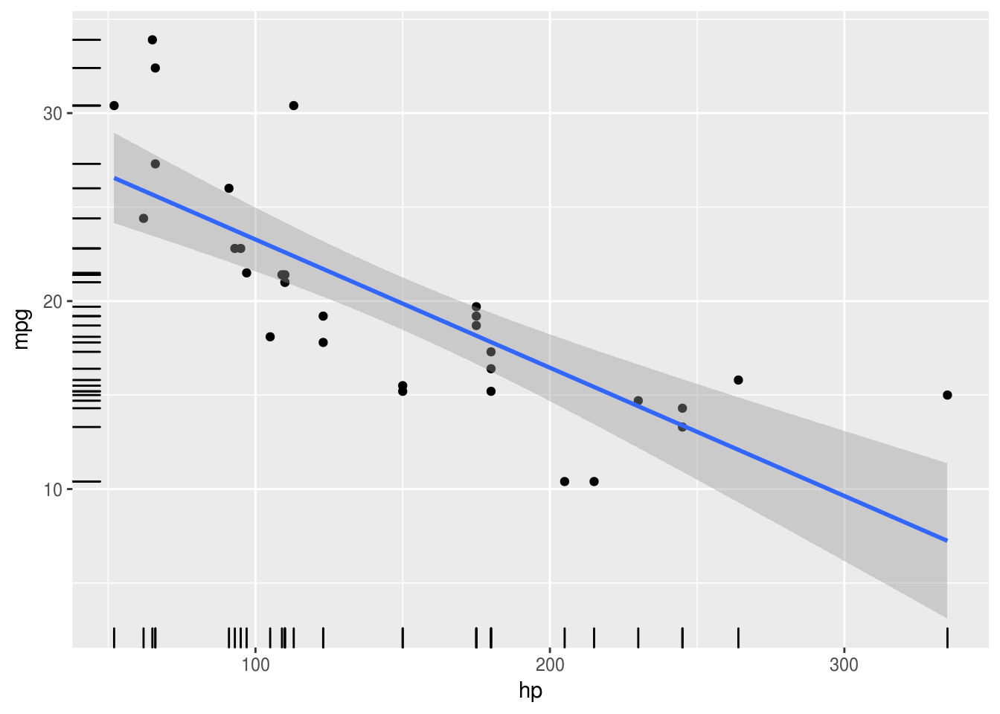
Une autre réprésentation est une carte de chaleur (ou heatmap), représentation les deux axes et un ensemble de zones rectangulaires ayant une couleur en fonction du nombre de points présents dans cette zone. Ce graphique est très intéressant dans le cas de données nombreuses. Et c’est l’utilisation de geom_bin2d() qui permet de la réaliser.
ggplot(mtcars, aes(hp, mpg)) + geom_bin2d()
ggplot(mtcars, aes(hp, mpg)) + geom_bin2d(bins = 10)
Var qualitative - Var qualitative
La création d’un diagramme en barres pour deux variables qualitatives est assez simple. Par contre, pour la version empilée, c’est le paramètre position = "fill" qui permet de le faire sans autre calcul, les fonctions suivantes n’étant la que pour avoir un graphique plus clair.
ggplot(mtcars, aes(factor(am))) + geom_bar() + facet_grid( ~ cyl)
ggplot(mtcars, aes(factor(am), fill = factor(cyl))) + geom_bar() 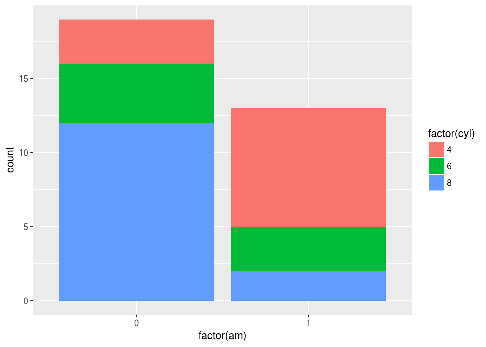
ggplot(mtcars, aes(factor(am), fill = factor(cyl))) +
geom_bar(position = "fill") +
scale_y_continuous(labels = percent) +
xlab("am") + ylab("") + labs(fill = "cyl")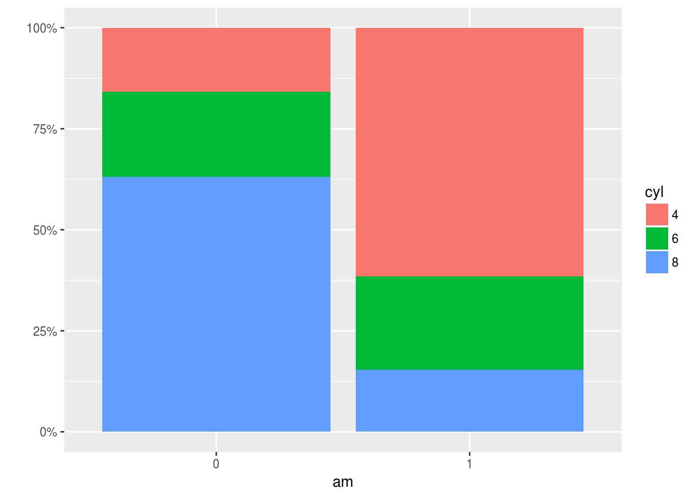
Pour créer les diagrammes circulaires d’une variable pour chaque modalité de l’autre variable, nous allons utiliser quasiment le même code que précédemment, en ajoutant l’information que les coordonnées sont désomais polaires (coord_polar()), avec un découpage de la zone graphique sur une des variables (avec facet_wrap()). Dans ce cas, il faut mettre une constante en \(x\) dans aes().
ggplot(mtcars, aes(0, fill = factor(cyl))) +
geom_bar(position = "fill") +
scale_y_continuous(labels = percent) +
xlab("am") + ylab("") + labs(fill = "cyl") +
coord_polar(theta = "y") +
facet_wrap(~ factor(am))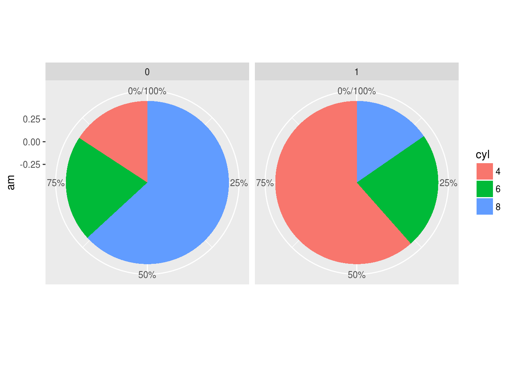
Enfin, il est aussi possible aussi de réaliser une heatmap, ou chaque zone est colorée en fonction du nombre d’individus ayant les modalités correspondantes dans les deux variables, avec la fonction geom_bin2d().
ggplot(mtcars, aes(factor(cyl), factor(am))) + geom_bin2d()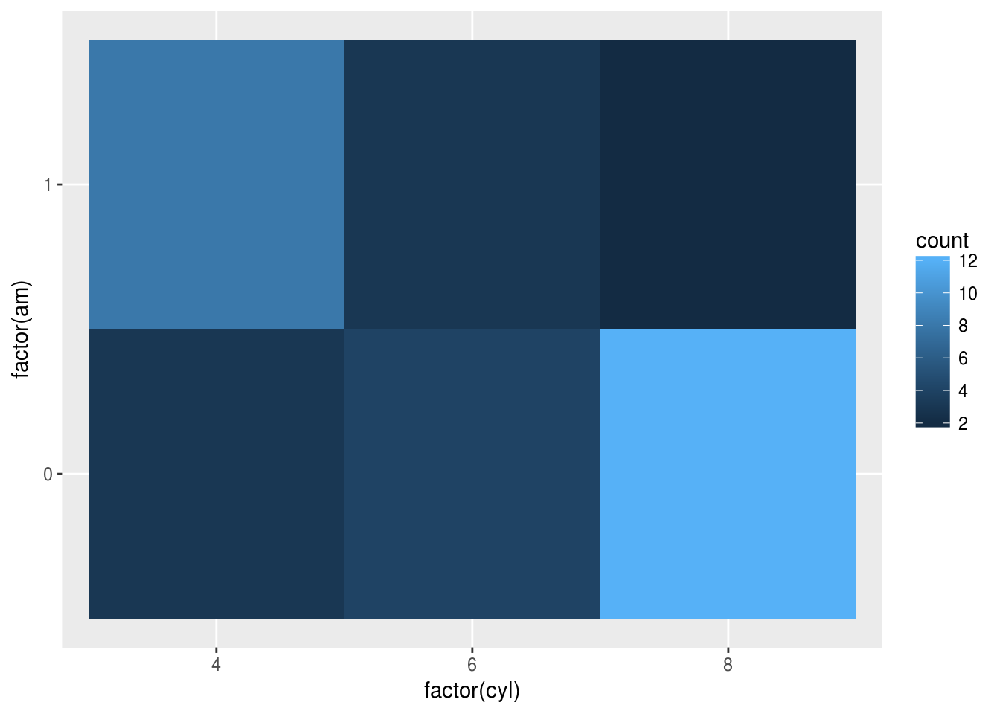
Var quantitative - Var qualitative
Pour croiser deux variables de type différent, nous devons représenter la distribution de la variable quantitative pour chaque modalité de la variable qualitative (ici, respectivement histogramme, densité, boîte à moustaches, et représentation des points avec une opération de jittering).
ggplot(mtcars, aes(mpg)) + geom_histogram(bins = 10) +
facet_grid(am ~ .)
ggplot(mtcars, aes(mpg, col = factor(am))) +
geom_density()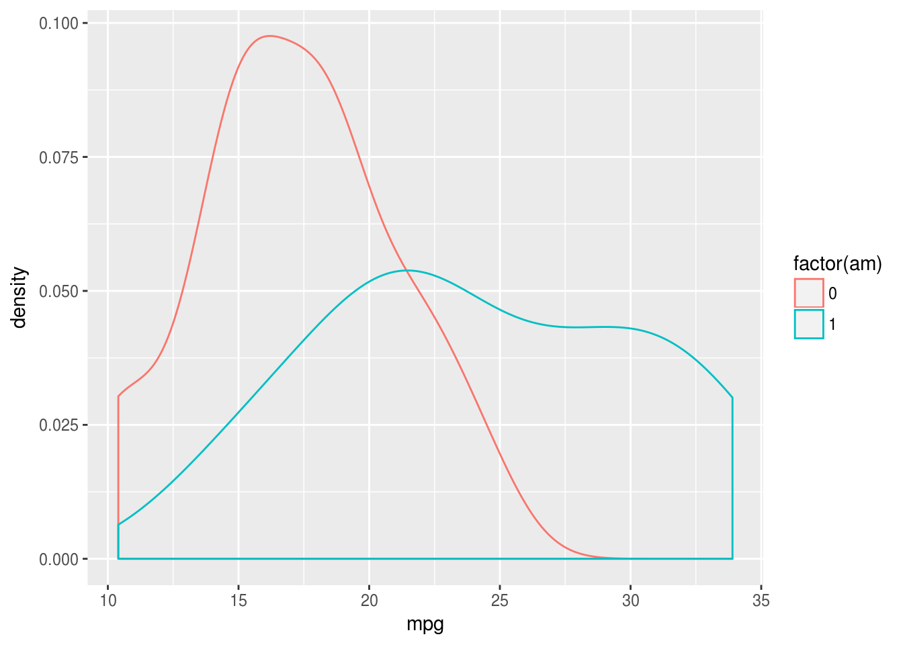
ggplot(mtcars, aes(factor(am), mpg, fill = factor(am))) +
geom_boxplot()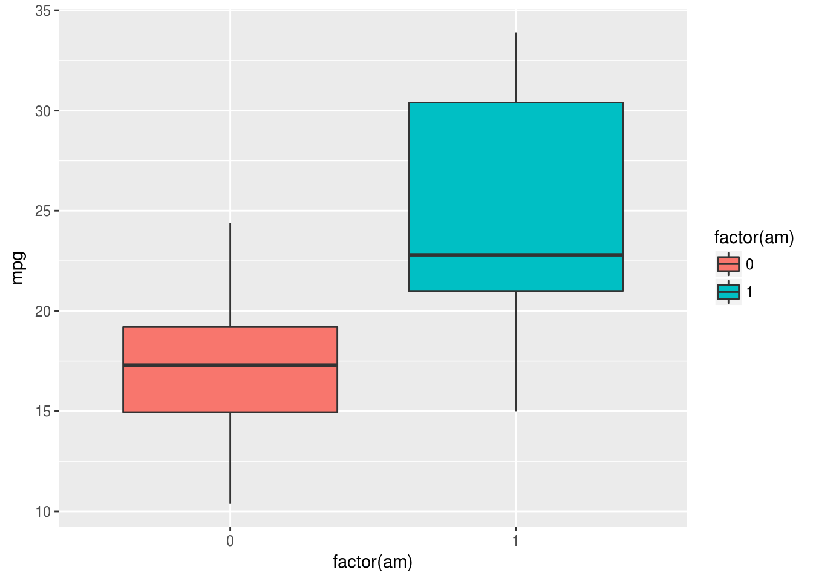
ggplot(mtcars, aes(factor(am), mpg)) +
geom_jitter()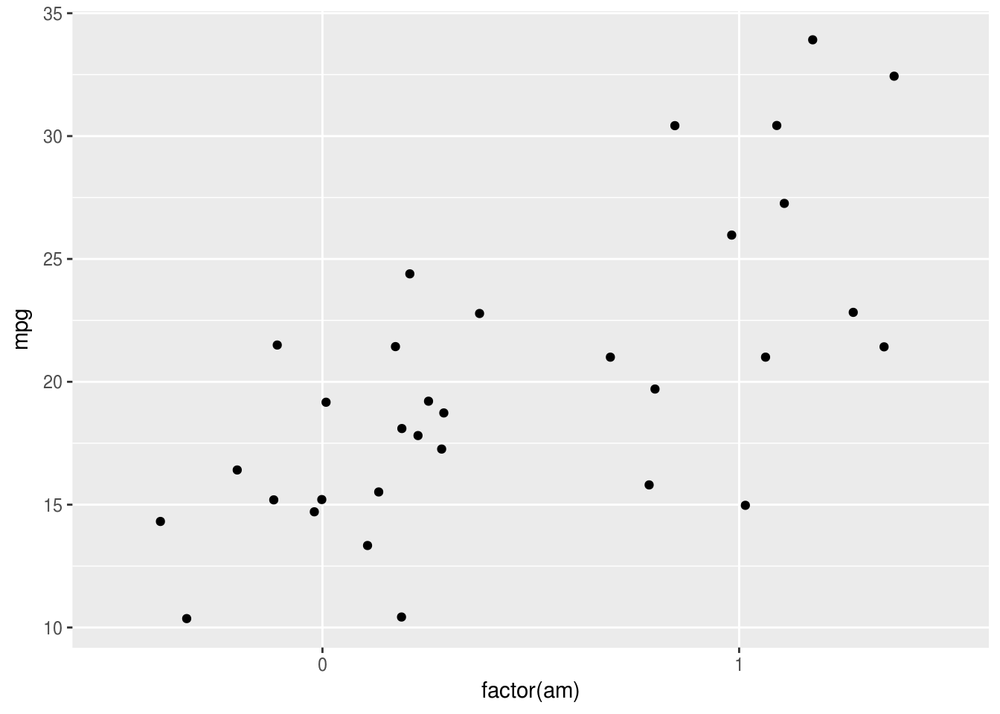
ggplot(mtcars, aes(factor(am), mpg)) +
geom_boxplot() +
geom_jitter()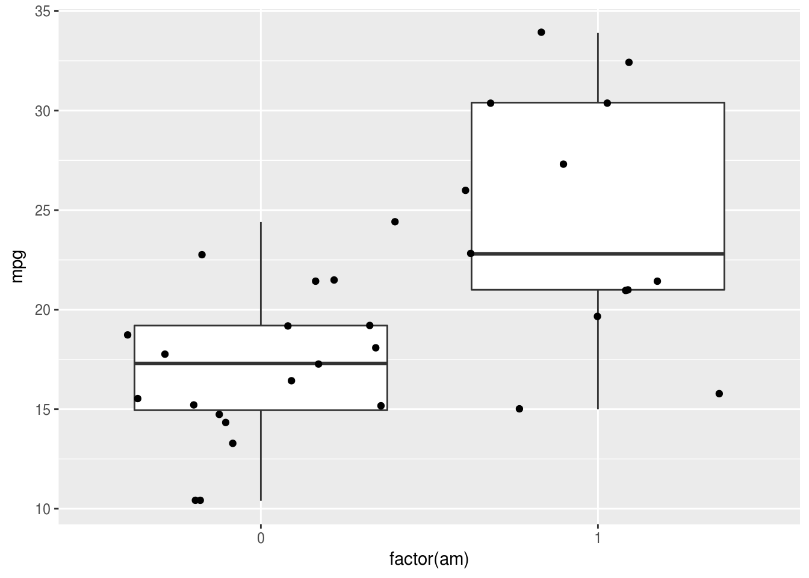
Exemple amélioré version ggplot
nom = rownames(mtcars)
nom[mtcars$hp <= 250 & mtcars$mpg <= 30] = ""
ggplot(mtcars, aes(x = hp, y = mpg,
color = factor(am, labels = c("Automatique", "Manuelle")),
size = wt,
label = nom)) +
geom_point() +
geom_text(size = 3, color = "black", vjust = -.75, fontface = "bold") +
ggtitle("Consommation et autres") +
xlab("Puissance (en ch)") + xlim(25, 350) +
ylab("Consommation en Miles/Galon") +
labs(color = "Transmission", size = "Poids (1000 lbs)") 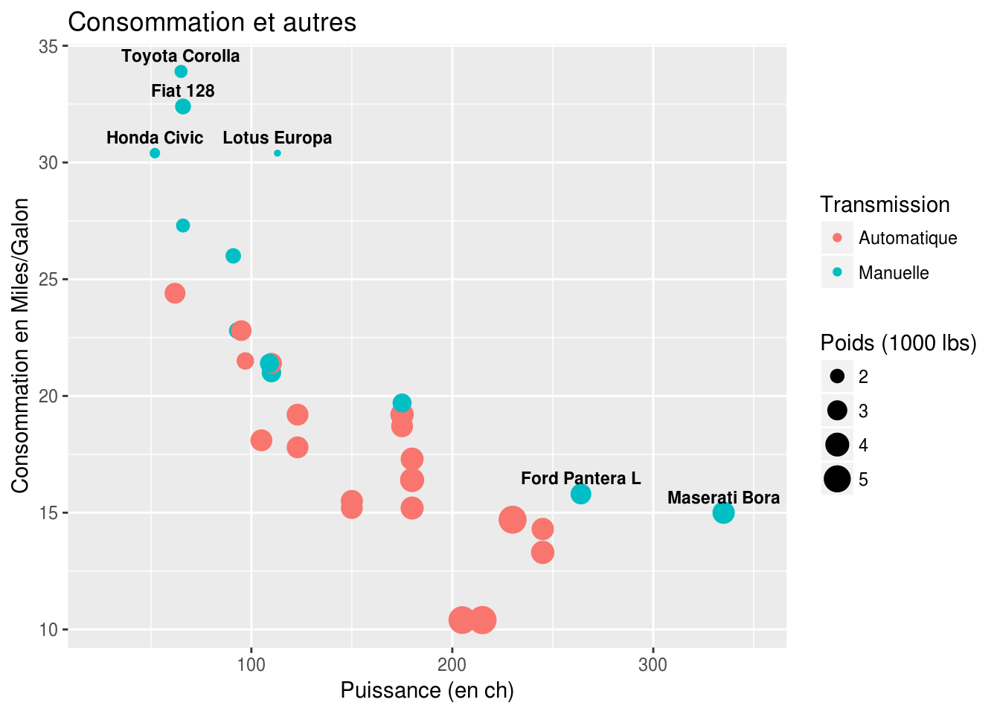
Quelques exemples complémentaires
Ce sont des exemples plus ou moins simple de créations de graphiques.
Données Iris
On cherche à représenter les boîtes à moustaches des 4 variables pour les trois espèces.
Avec plot
par(mfrow = c(2, 2), mar = c(2, 2, 2, 0) + .1)
for (i in 1:4) {
boxplot(iris[,i] ~ iris$Species, main = names(iris)[i])
}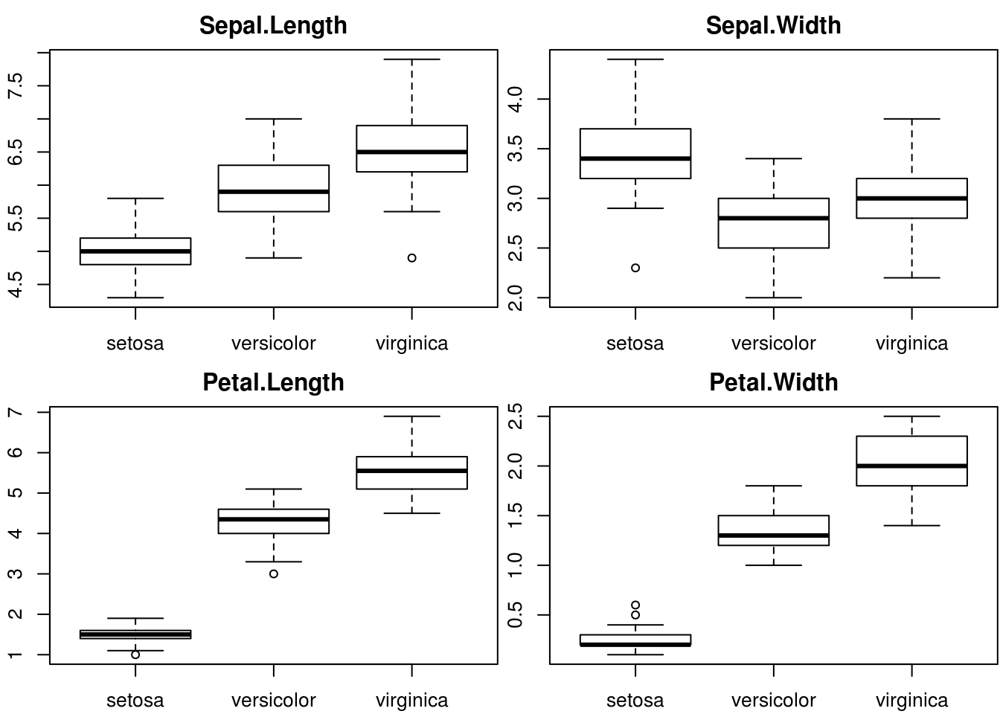
Avec ggplot
ggplot(melt(iris, id.vars = "Species"), aes(Species, value)) +
geom_boxplot() + facet_grid( ~ variable)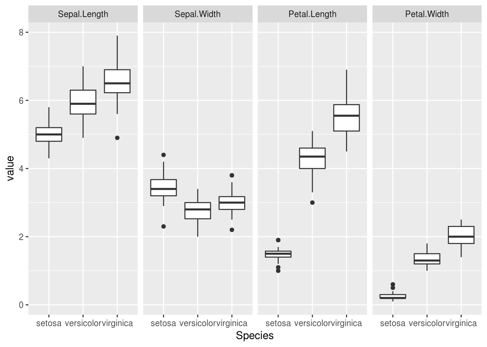
Données d’ancombe
DT::datatable(anscombe, options = list(searching = F, ordering = F, paging = F))par(mfrow = c(2, 2), mar = c(2, 2, 0, 0)+.1)
f <- function(df) {
names(df) = c("x", "y")
m = lm(y ~ x, data = df)
plot(y ~ x, data = df, pch = 19, bty = "n",
xlim = range(anscombe[,1:4]),
ylim = range(anscombe[,5:8]))
abline(m, col = "red")
}
for (i in 1:4) {
f(anscombe[,paste(c("x", "y"), i, sep = "")])
}
ans = transform(
cbind(
melt(subset(anscombe, select = c(x1, x2, x3, x4)),
variable.name = "coordx", value.name = "x"),
melt(subset(anscombe, select = c(y1, y2, y3, y4)),
variable.name = "coordy", value.name = "y")
),
num = substr(coordx, 2, 2)
)
ggplot(ans, aes(x, y)) + geom_point() +
facet_wrap(~ num) +
geom_smooth(method = "lm", se = FALSE, fullrange = T)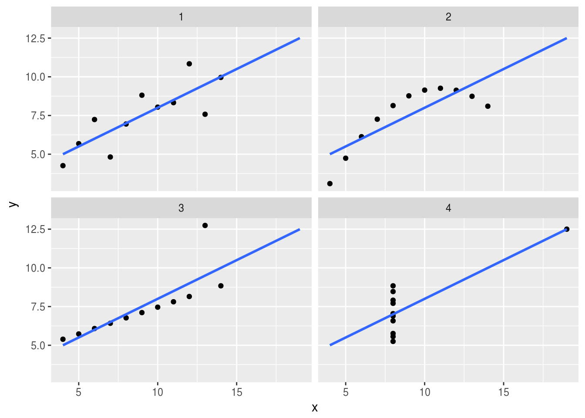
Applications
Nous allons utiliser les données tips du package reshape2.
- Comment répondre aux questions suivantes :
- Les pourboires (
tip) dépendent ils du montant (total_bill) - Et des jours de la semaine (
day) ? - Et du nombre de convives (
party) ? - Croiser
tipen fonction detotal_billetparty
- Représenter
total_billen fonction desexetsmoker. - Toujours dans
tips, représentertotal_billettip, en fonction desexde 2 façons - Idem avec
smokeren plus
Cartographie
Un des aspects intéressant dans la visualisation de données est la représentation de cartes, soit avec des marqueurs locaux (i.e. des points représentant des positions géographiques, avec des attributs esthétiques dépendant d’une variable par exemple), soit avec des couches représentant des zones spécifiques (pays, région, ville, avec une couleur dépendant d’une variable aussi).
Avec la librairie leaflet
La librairie leaflet permet de créer des cartes dans R à partir de la librairie Javascript Leaflet.
Voici un premier exemple simple de création de carte du monde
m = leaflet() %>% addTiles()
mPour laquelle il est possible de choisir la zone d’intêrêt, en indiquant les latitudes et longitudes min et max.
m %>% fitBounds(0, 40, 5, 50)Il est aussi possible de préciser les coordonnées géographiques du centre de la carte, ainsi que le niveau de zoom (entre 1 - monde - et 18 - pâté de maison).
m = m %>% setView(2.268224, 48.842275, zoom = 17)
mOn peut y ajouter une pop-up assez facilement.
m %>% addPopups(2.268224, 48.842275, "IUT Paris Descartes")Ou un marqueur, pour lequel le texte s’affichera lorsque nous cliquerons sur le marqueur.
m %>% addMarkers(2.268224, 48.842275, popup = "IUT Paris Descartes")Voire des formes classiques (cercle, rectangle, polygone)
m %>% addCircles(2.268224, 48.842275, radius = 100) %>%
addRectangles(2.27, 48.835, 2.28, 48.84)A partir du jeu de données ozone du package maps, et contenant des informations géogrpahiques, nous allons représenter ces informations sur une carte.
DT::datatable(head(ozone))Ici, nous faisons en sorte que la taille des cercles soient dépendantes de la variable median, mais nous devons ajuster à la main pour avoir des valeurs intéressantes pour la représentation.
leaflet(ozone) %>% addTiles() %>%
addCircles(lng = ~x, lat = ~y, radius = ~median*100)Avec la librairie ggmap
La librairie ggmap a pour but de simplifier la cartographie, à l’aide de carte provenant de Google Maps, OpenStreetMap ou autre au choix, en y ajoutant la possibilité de rajouter des couches avec ggplot2.
Pour cela, il faut faire deux opérations :
- la première pour récupérer les tuiles de représentation des cartes (avec
get_map()) - la seconde pour afficher ces tuiles (avec
ggmap()), ce qui créé un objet
m = get_map("Paris,France")
ggmap(m) 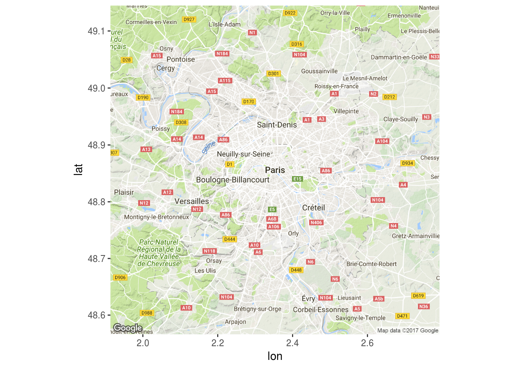
La fonction qmplot() permet de rendre invisible l’étape de récupération des tuiles, et est l’équivalent de qplot par rapport à ggmap().
qmplot(x, y, data = ozone, color = median)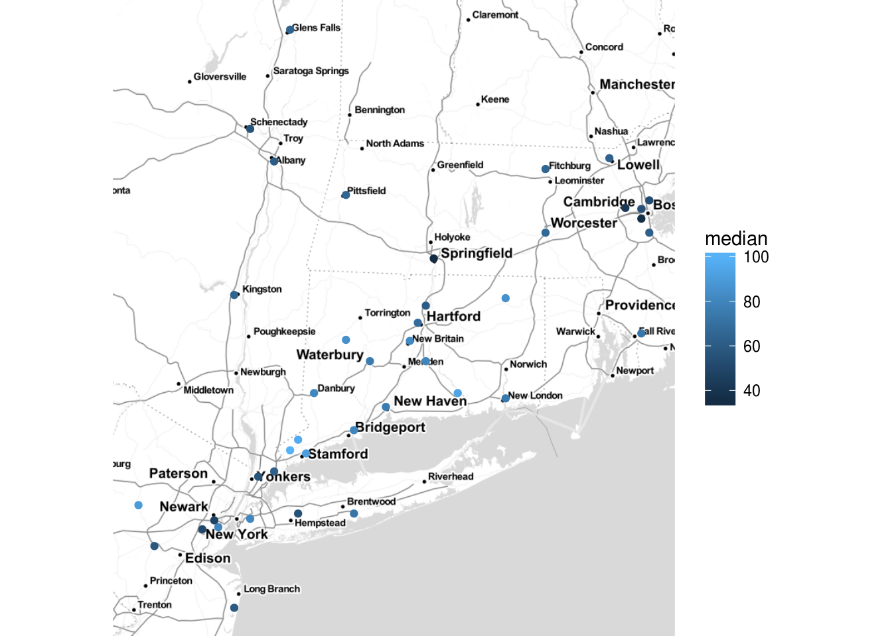
On peut aussi vouloir spécifier nous-même les différentes étapes, comme ci-dessous :
- récupération des tuiles de la carte, en spécifiant les limites de la zone
- affichage de la carte et ajout des représentations géographiques comme avec
ggplot()vu précédemment.
left = min(ozone$x) - .5
bottom = min(ozone$y) - .5
right = max(ozone$x) + .5
top = max(ozone$y) + .5
m = get_map(location = c(left, bottom, right, top),
maptype = "toner-lite", color = "bw")
ggmap(m) + geom_point(data = ozone, aes(x, y, color = median))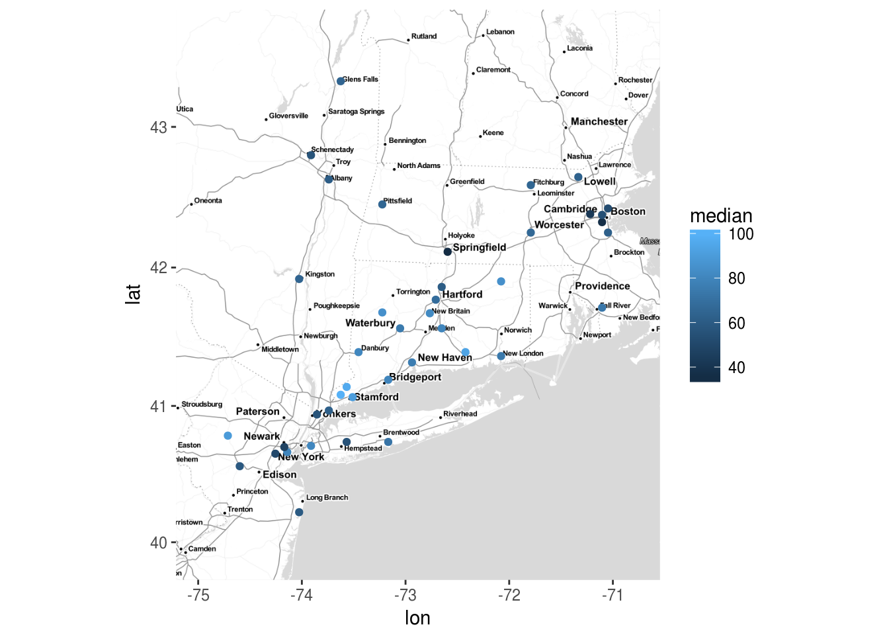
Applications
En utilisant les données crime du package ggmap, comment représenter le nombre et les types de crime par rapport à leur localisation ?
Mini-projet
Introduction
Nous disposons de données d’AirBnB pour Paris à la date du 2 septembre 2015 ( données source ). Celles-ci ont été légèremment nettoyées et réduites pour obtenir les fichiers suivants :
| Fichier | Contenu |
|---|---|
airbnb-paris-2015-09-02-summary.csv |
Résumé à quelques informations de base |
airbnb-paris-2015-09-02.csv |
Données plus complètes |
airbnb-paris-2015-09-02-neighbourhoods.geojson |
Représentation graphiques des arrondissement |
On commence déjà par importer ces données dans R.
airbnb.summ = read.table("donnees/airBnB-2015-09-02/airbnb-paris-2015-09-02-summary.csv",
sep = ",", header = T,
quote = "\"", comment.char = "")
airbnb.comp = read.table("donnees/airBnB-2015-09-02/airbnb-paris-2015-09-02.csv",
sep = ",", header = T,
quote = "\"", comment.char = "")Sur ces données, il est déjà possible de représenter chaque logement par un point, assez simplement
ggplot(airbnb.summ, aes(x=longitude, y=latitude)) + geom_point()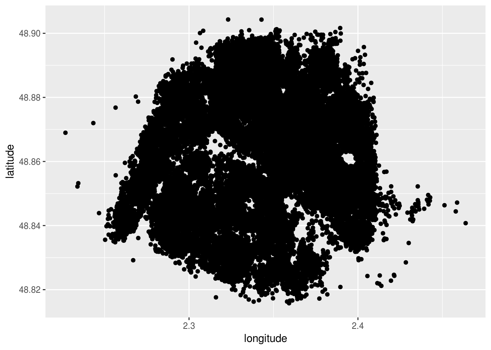
La librairie geojsonio permet de lire et d’écrire des données au format GeoJSON, permettant de réprésenter des objets géoraphiques dans un formalisme issue de JSON. Il est très utilisé pour représenter des zones, telles que des villes, des pays, …
On importe donc les données des arrondissements. La fonction fortify() de ggplot2 nous permet ici de passer à un format lisible pour ggplot().
airbnb.neigh = geojson_read("donnees/airBnB-2015-09-02/airbnb-paris-2015-09-02-neighbourhoods.geojson", what = "sp")
airbnb.neigh.for = fortify(airbnb.neigh)
ggplot(airbnb.neigh.for, aes(long, lat, group=group)) +
geom_polygon() + theme_void()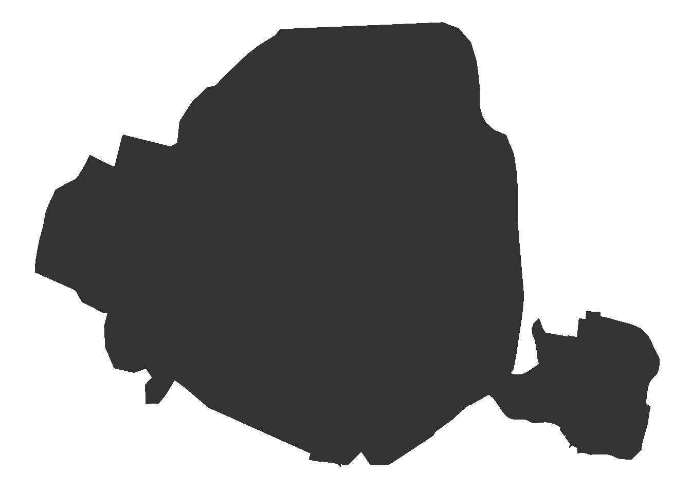
Le problème dans notre cas est que les quartiers ne sont pas classés dans un ordre spécifique dans les données, et que l’objet airbnb.neigh ne comporte plus le nom du quartier, ce qui va nous empêcher de faire le lien avec les autres données. Le code suivant permet donc de récupérer l’ordre des quartiers et de le stocker dans un data.frame. On lit différement le jeu de données.
airbnb.neigh.ord = data.frame(
id = as.character(0:19),
neighbourhood = unlist(lapply(geojson_read("donnees/airBnB-2015-09-02/airbnb-paris-2015-09-02-neighbourhoods.geojson")$features, function(f) return(f$properties$neighbourhood)))
)
airbnb.neigh.ord## id neighbourhood
## 1 0 Batignolles-Monceau
## 2 1 Palais-Bourbon
## 3 2 Buttes-Chaumont
## 4 3 Opéra
## 5 4 Entrepôt
## 6 5 Gobelins
## 7 6 Vaugirard
## 8 7 Reuilly
## 9 8 Louvre
## 10 9 Luxembourg
## 11 10 Élysée
## 12 11 Temple
## 13 12 Ménilmontant
## 14 13 Panthéon
## 15 14 Passy
## 16 15 Observatoire
## 17 16 Popincourt
## 18 17 Bourse
## 19 18 Buttes-Montmartre
## 20 19 Hôtel-de-VilleIl peut être intéressant de calculer le centre de chaque quartier, pour pouvoir l’ajouter sur la carte par la suite. Pour cela, nous prenons la moyenne entre la latitude (et resp. la longitude) minimale et maximale.
airbnb.neigh.cen = merge(airbnb.neigh.ord,
aggregate(cbind(long, lat) ~ id, airbnb.neigh.for,
function (c) return(mean(range(c))))
)
ggplot(airbnb.neigh.for, aes(long, lat, group=group)) +
geom_polygon(fill = "gray70", color = "gray50") +
geom_text(data = airbnb.neigh.cen, aes(label = neighbourhood, group=id)) + theme_void()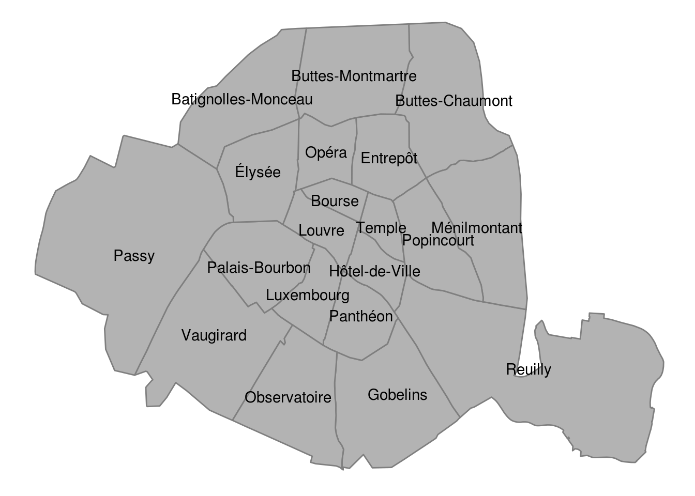
Au final, on peut faire une carte des arrondissements, en y ajoutant le nom du voisinage, les points des logements et une couleur pour chaque arrondissement dépendant de la variable group par exemple (on pourra utiliser ce schéma pour représenter des informations statistiques par exemple)
ggplot(airbnb.neigh.for) +
geom_polygon(aes(long, lat, group=group, fill=id), color="gray50") +
geom_point(data=airbnb.summ, aes(longitude, latitude), col="gray30", alpha=.5) +
geom_text(data=airbnb.neigh.cen, aes(long, lat, label=neighbourhood, group=id)) +
theme_void() + theme(legend.position="none")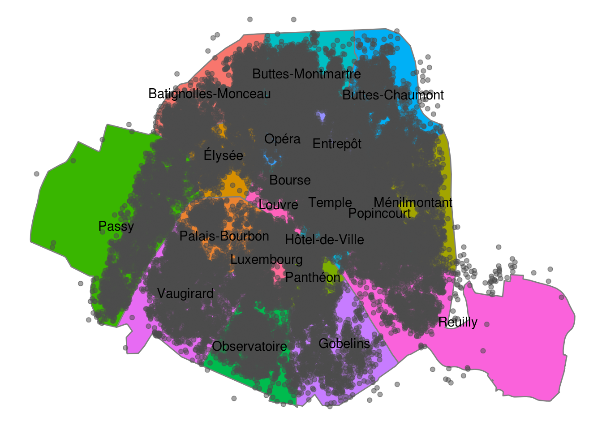
Questions
- Représenter les logements sur la carte de Paris
- Représenter les quartiers sur la carte de Paris
- Représenter ces deux informations sur la carte de Paris, avec pour la première
- soit du point par point
- soit avec une heatmap
- Représenter le nombre de logements par quartier
- Idem pour le prix moyen